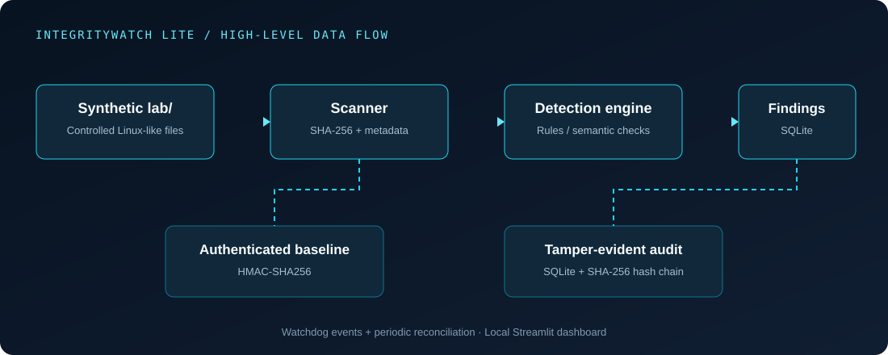

FEATURED PROJECT / 001PYTHON · LINUX · SECURITY TOOLING
FILE INTEGRITY / EXPLAINABLE DETECTION
IntegrityWatch
Lite.
A local-first file-integrity monitor for a controlled Linux-like lab. It detects changes, explains supported security-relevant modifications through explicit rules, and keeps a tamper-evident record of findings.
Explore the repository ↗
SYSTEM OVERVIEW / DATA FLOW
CORE ENGINEERING
- SHA-256 baselines + HMAC authentication
- Rule-based semantic checks and ATT&CK references
- Watchdog events + periodic reconciliation
- SQLite findings + SHA-256 audit chain
EVALUATION
12/12expected attack rules
detected in test corpus
detected in test corpus
0/4benign false positives
in smart-mode corpus
in smart-mode corpus
Synthetic evaluation results only; not real-world detection rates. Built for a controlled local lab, not enterprise endpoint protection.